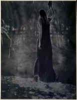

<!DOCTYPE HTML PUBLIC "-//W3C//DTD HTML 4.01 Transitional//EN"        "http://www.w3.org/TR/html4/loose.dtd">
<html lang="en">

<head>
<title>Werner Trieschmann:&nbsp; The Muscadine Trellis - Henderson State 
University</title>
<meta http-equiv="Content-Language" content="en-us">
<meta http-equiv="Content-Type" content="text/html; charset=windows-1252">
<meta name="GENERATOR" content="Microsoft FrontPage 5.0">
<meta name="ProgId" content="FrontPage.Editor.Document">
<meta name="copyright" content="Copyright © 2002 Henderson State University">
<meta name="rating" content="General">
<meta name="Microsoft Border" content="none, default">
</head>

<body background="ARlogoborder.jpg" link="#6F0000" vlink="#6F0000" alink="#6F0000" bgcolor="#FFFFFF"><div style="background:#241b2e;color:#fff;font-family:Arial,sans-serif;font-size:13px;padding:6px 14px;text-align:center;position:relative;z-index:9999;display:flex;align-items:center;justify-content:center;gap:10px;flex-wrap:wrap;"><span><a href="/books/arkansas-literary-forum" style="color:#fff;text-decoration:underline;">‚Üê Back to MarckBeggs.com</a> &nbsp;|&nbsp; <span style="opacity:.75;">Arkansas Literary Forum archive, preserved as originally published</span></span></div>

<table border="0" width="80%" align="right">
  <tr>
    <td width="100%">
      <blockquote>
      <p class="MsoNormal" style="tab-stops:right 204.2pt"><b><font color="#800000" size="5" face="Arial"><span style="mso-bidi-font-size: 10.0pt">Werner
      Trieschmann<o:p>
      &nbsp;</span></font></b></p>
      </blockquote>
      <o:p>
      <p class="MsoNormal" style="tab-stops:right 204.2pt"><b><span style="mso-bidi-font-size: 10.0pt; font-family: Times New Roman; mso-bidi-font-style: italic"><font size="4">The
      Muscadine Trellis</font></span></b><span style="font-size:12.0pt;mso-bidi-font-size:10.0pt;font-family:&quot;Times New Roman&quot;"><b><br>
      </b></span>&nbsp;&nbsp;&nbsp;&nbsp;&nbsp;&nbsp;&nbsp;&nbsp;&nbsp; <b> <span style="mso-bidi-font-size: 10.0pt; font-family: Times New Roman"><font size="3">(A
      Comedy)<o:p>
      </o:p>
      </font></span> 
      </b></p>
      <p class="MsoNormal" style="tab-stops:right 56.9pt"><span style="font-size:12.0pt;
mso-bidi-font-size:10.0pt;font-family:&quot;Times New Roman&quot;">&nbsp;</span><span style="font-size:
14.0pt;mso-bidi-font-size:10.0pt;font-family:&quot;Times New Roman&quot;"><b>&nbsp;<span style="mso-tab-count:1">&nbsp;&nbsp;&nbsp;&nbsp;&nbsp;&nbsp;&nbsp;
      </span>Cast<o:p>
      <a href="art/Hether11.jpg">
      </a>&nbsp;&nbsp;&nbsp;&nbsp;&nbsp;&nbsp;&nbsp;&nbsp;&nbsp;&nbsp;&nbsp;&nbsp;&nbsp;&nbsp;&nbsp;&nbsp;&nbsp;&nbsp;&nbsp;&nbsp;&nbsp;&nbsp;&nbsp;&nbsp;&nbsp;&nbsp;&nbsp;&nbsp;&nbsp;&nbsp;&nbsp;&nbsp;&nbsp;&nbsp;&nbsp;&nbsp;&nbsp;&nbsp;&nbsp;&nbsp;&nbsp;&nbsp;&nbsp;&nbsp;&nbsp;&nbsp;&nbsp;&nbsp;&nbsp;&nbsp;&nbsp;&nbsp;&nbsp;&nbsp;&nbsp;&nbsp;&nbsp;&nbsp;&nbsp;&nbsp;&nbsp;&nbsp;&nbsp;&nbsp;&nbsp;&nbsp;&nbsp;&nbsp;&nbsp;&nbsp;&nbsp;&nbsp;&nbsp;&nbsp;&nbsp;&nbsp; </o:p>
      </b></span><o:p><font size="1" face="Arial"><span style="mso-bidi-font-size: 10.0pt">(Hether
      Burks)</span></font></o:p><span style="font-size:
14.0pt;mso-bidi-font-size:10.0pt;font-family:&quot;Times New Roman&quot;"><b>
      </b>
      </span></p>
      <p class="MsoNormal" style="tab-stops:right 396.4pt"><b><span style="font-size:
12.0pt;mso-bidi-font-size:10.0pt;font-family:&quot;Times New Roman&quot;">Anna</span></b><span style="font-size:12.0pt;mso-bidi-font-size:10.0pt;font-family:&quot;Times New Roman&quot;">
      - late 30s, owner of the house, accountant, reserved, worn down</span><b><span style="font-size:
12.0pt;mso-bidi-font-size:10.0pt;font-family:&quot;Times New Roman&quot;"><br>
      Olin </span></b><span style="font-size:12.0pt;mso-bidi-font-size:10.0pt;font-family:&quot;Times New Roman&quot;">-
      uncle in his 70s, has Altzheimer's</span><b><span style="font-size:
12.0pt;mso-bidi-font-size:10.0pt;font-family:&quot;Times New Roman&quot;"><br>
      Sarah</span></b><span style="font-size:12.0pt;mso-bidi-font-size:10.0pt;font-family:&quot;Times New Roman&quot;">
      - aunt and wife of Olin, in her 70s</span><b><span style="font-size:
12.0pt;mso-bidi-font-size:10.0pt;font-family:&quot;Times New Roman&quot;"><br>
      Barry</span></b><span style="font-size:12.0pt;mso-bidi-font-size:10.0pt;font-family:&quot;Times New Roman&quot;">
      - late 30s/early 40s, unusually quiet</span><b><span style="font-size:
12.0pt;mso-bidi-font-size:10.0pt;font-family:&quot;Times New Roman&quot;"><br>
      Aurora</span></b><span style="font-size:12.0pt;mso-bidi-font-size:10.0pt;font-family:&quot;Times New Roman&quot;"><b>
      </b>- early 30s, Anna's sister, talkative, an addict</span><b><span style="font-size:
12.0pt;mso-bidi-font-size:10.0pt;font-family:&quot;Times New Roman&quot;"><br>
      Cal</span></b><span style="font-size:12.0pt;mso-bidi-font-size:10.0pt;font-family:&quot;Times New Roman&quot;"><b>
      </b>- a Methodist minister, late 20s</span><b><span style="font-size:
12.0pt;mso-bidi-font-size:10.0pt;font-family:&quot;Times New Roman&quot;"><br>
      Dr. Way</span></b><span style="font-size:12.0pt;mso-bidi-font-size:10.0pt;font-family:&quot;Times New Roman&quot;">
      - 50s, New Age guru<o:p>
      </o:p>
      </span></p>
      <p class="MsoNormal" style="tab-stops:right 396.4pt"><span style="font-size:12.0pt;
mso-bidi-font-size:10.0pt;font-family:&quot;Times New Roman&quot;">&nbsp;</span><b><span style="font-size:
14.0pt;mso-bidi-font-size:10.0pt;font-family:&quot;Times New Roman&quot;"><span style="mso-spacerun: yes">&nbsp;&nbsp;&nbsp;&nbsp;&nbsp;&nbsp;&nbsp;&nbsp;&nbsp;
      </span>Time</span></b><span style="font-size:12.0pt;
mso-bidi-font-size:10.0pt;font-family:&quot;Times New Roman&quot;"><br>
      1994&nbsp;<o:p>
      </o:p>
      </span></p>
      <p class="MsoNormal" style="tab-stops:right .25in"><b><span style="font-size:
14.0pt;mso-bidi-font-size:10.0pt;font-family:&quot;Times New Roman&quot;"><span style="mso-spacerun: yes">&nbsp;&nbsp;&nbsp;&nbsp;&nbsp;&nbsp;&nbsp;&nbsp;&nbsp;
      </span>Place</span></b><span style="font-size:12.0pt;
mso-bidi-font-size:10.0pt;font-family:&quot;Times New Roman&quot;"><br>
      Back yard of Anna's house in rural northwestern Arkansas<o:p>
      </o:p>
      </span></p>
      <p class="MsoNormal" style="tab-stops:right 323.7pt"><span style="font-size:12.0pt;
mso-bidi-font-size:10.0pt;font-family:&quot;Times New Roman&quot;">&nbsp;</span><b><span style="font-size:
14.0pt;mso-bidi-font-size:10.0pt;font-family:&quot;Times New Roman&quot;"><span style="mso-spacerun: yes">&nbsp;&nbsp;&nbsp;&nbsp;&nbsp;&nbsp;&nbsp;&nbsp;&nbsp;
      </span>Setting</span></b><span style="font-size:12.0pt;
mso-bidi-font-size:10.0pt;font-family:&quot;Times New Roman&quot;"><br>
      A faded garden with more than a hint of abandonment. Muscadine vines have
      covered a corridor/tunnel made out of trellis wood. This muscadine tunnel
      runs from the back of the house to the garden. As waist high hedges extend
      beyond both sides of the corridor, it is the only quick way to get to the
      garden. Off to the left in front of the hedges is a black iron table with
      four chairs. Off to the right and back a bit is a black iron bench.<o:p>
      </o:p>
      </span></p>
      <p class="MsoNormal" style="tab-stops:right 394.2pt"><span style="font-size:12.0pt;
mso-bidi-font-size:10.0pt;font-family:&quot;Times New Roman&quot;">&nbsp;</span></p>
      <table border="1" width="100%" bordercolor="#000000" cellspacing="0" cellpadding="10">
        <tr>
          <td width="25%">
            <p align="center">
            <a title="Select to go to Act 1" href="Werner1.html">One</a></td>
          <td width="25%">
            <p align="center">
            <a title="Select to go to Act 2" href="Werner2.html">Two</a></td>
          <td width="25%">
            <p align="center">
            <a title="Select to go to Act 3" href="Werner3.html">Three</a></td>
          <td width="25%">
            <p align="center">
            <a title="Select to go to Act 4" href="Werner4.html">Four</a></td>
        </tr>
        <tr>
          <td width="25%">
            <p align="center">
            <a title="Select to go to Act 5" href="Werner5.html">Five</a></td>
          <td width="25%">
            <p align="center">
            <a title="Select to go to Act 6" href="Werner6.html">Six</a></td>
          <td width="25%">
            <p align="center">
            <a title="Select to go to Act 7" href="Werner7.html">Seven</a></td>
          <td width="25%">
            <p align="center">
            <a title="Select to go to Act 8" href="Werner8.html">Eight</a></td>
        </tr>
      </table><P align="center">
      <a title="Select to go to the Home Page" href="1999.html">HOME</a></P>

    </td>
  </tr>
</table>

</body>

</html>